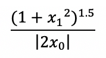

Lane Detection
Soham Gadgil, Ashwin Natarajan, Shaurye Aggarwal, William Xia, Abhishek Tumuluru, Mohit ChauhanFall 2018 CS 4476 Computer Vision: Class Project
Georgia Tech
Abstract
Lane detection is an increasingly relevant topic given the advent of driver-assist technologies, self-driving vehicles, and automation. Implementing a Computer Vision approach in openCV to detect lanes and overlay them is one of the main parts of our project. In addition to pure Computer vision methods, a machine learning method combined with some computer vision is a potential way to solve this problem. We compare the different approaches and point out conditions wherein different approaches perform better.To compare the two approaches, we use a similar accuracy formula across the approaches to compare the quality of our predicted output to the ground truth that is given along with the dataset. In comparing the two approaches over a variety of condition (curved roads, dark/night pictures, crowded roads, and optimal conditions) we found that the classical computer vision approach yielded consistently better results across all conditions. The time taken by each method on test cases is similar but the computer vision is slightly faster. Hence overall, the classical computer vision model performs better than a machine learning approach in lane detection for the selected dataset.

Introduction
The goal of our team’s project is divided into three sections. The first is to build a computer vision system that can detect which lane on the road a car is driving on. Secondly, we aim to detect the degree by which the road is turning in the event that there is curvature on the road. The third part of our project is the comparison of the computational performance and outputs of a Machine Learning model versus our classic Computer Vision approach. CNNs, Deep learning, and K-means are potential machine learning models that can be used for this purpose. The input to the classical system will be a short video of a car driving along a road that has clear lane markings on it. The output will be a video of the car driving along the road along with an overlaid image that shows which lane the car is on. For example, if the car is in the middle lane in the video, then the output video would show the car moving with the middle lane having a different color than the other lanes. The output video will also contain a varying numeric value at the top of the screen that indicates how many degrees the road is curving by. This could be a number between 0 and 360 degrees or a number representing the radius of curvature, depending on what gives more information about how much to turn the steering wheel. These two pieces of information (current lane and degree of turning) are the first steps in building an steering system for an autonomous car since the car will be able to steer such that it stays in its current lane, while also adjusting to the curvature of the road. Like the Computer Vision approach, the ML model will take in a video of a car driving along a road and it will return a similar video with highlighted lane markings overlaid on top of the roads in the frames.Approach
To achieve lane detection our team focuses on two approaches: classical and machine learning methodologies. Part of our objective is to compare the performance of the two paradigms, namely the speed, accuracy, and resource of the algorithms. To achieve these comparisons, we measure the performance on a chosen dataset and use both types of approaches to build a better understanding of how quickly each algorithm can accomplish the task. Speed is measured by how fast each algorithm completes the lane detection, accuracy is measured by how close the algorithms are to ground truth, and the resource consumption is measured by the amount of memory and code length used.Classical Approach
Matching a line to a potential lane involves multiple steps: perspective transform, pixel counting, and spline regression. We operated with the assumption that the road would be in a certain area in the middle of the image, and we considered this assumption valid since a dashcam will usually be stationarily mounted on the car. A perspective transform can be applied on this section to emphasize the lines and create a bird’s eye view of the road. To achieve this, we use the getPerspectiveTransform method in openCV which requires a list of the source coordinate points and the corresponding coordinate points in the bird’s eye view. We obtain these correspondences by choosing an area where we expect lanes to be, and map the points to a square. Next, we threshold the grayscale version of our image so that only very white pixels will be detected; this thresholding is meant to filter out non-lane artifacts, since road lanes are usually painted white. After the thresholding, we search for pixels in two rectangular areas that represent our guess for where the lane would be located. As pixels are detected in the rectangles, the rectangles are iteratively adjusted, so that the midpoint of the rectangle is at the location of highest pixel concentration. Once the boxes reach the top of the image, a path is formed that highlights the path of highest detected pixel density. The spline is matched according to this path, and is subsequently drawn on the image. The warped image is then unwarped back to the original perspective, so that the predicted line is overlain on the original image.The radius of curvature is a measure of how much the road curves. Since our approach uses a polynomial regression method, it is possible to calculate the radius of curvature once the polynomial is obtained. We assumed the radius of curvature would be equivalent for both lanes since, usually, driving lanes are parallel to each other, thus we are only outputting one radius of curvature to describe the predicted lane. The equation for the radius of curvature is as follows:

Where x1 and x0 are the first and zeroth degree coefficients respectively for the regressed polynomial.
Machine Learning Approach
For the machine learning implementation, we chose LaneNet, a deep, branched, multi-task network for lane detection and H-Net as described in [1]. This system claims to be robust to road scene variations unlike many of the classical lane detection techniques. Compared to other machine learning techniques this network doesn’t require predefined and fixed number of lanes in order to detect them and is further robust to lane changes.The network (and the problem) in this technique is branched into two: segmentation branch and lane embedding branch. The segmentation branch is tasked with deciding whether a pixel belongs to a lane or not and it outputs a binary segmentation map. This part of the network is trained using the standard cross-entropy loss function. Using the output of the segmentation branch, the lane embedding branch then disentangles the lane pixels. It outputs an N-channel embedding per pixel where N is the number of embeddings by using the clustering loss function exploited for distance metric learning as proposed in [2]. This branch produces each embedding in such a way such that embeddings of the pixels that are in the same lane are as close as possible and the embeddings of the pixels belonging to different lanes as far as possible. Due to this fact, the pixels of the same lanes are then clustered using an iterative process that ends when all pixels have been assigned to a lane.
Given an input image, the networks outputs a map where each lane pixel is labeled with a lane id. To actually fit curves to the lane, instead of using the standard “bird-eye” transformation the system employs H-Net which outputs the optimal transformation H given an input image. This makes the curve-fitting robust to ground-plane changes. The transformation H is then used to transform each lane pixel and fit a 3rd order polynomial. Each lane’s polynomial is then projected back into the image space.
Experiments and results
Since the primary focus of the project is to find the optimal lane detection algorithm and comparing the two different approaches used, most of the experiments involved running the algorithms on test datasets and analyzing and comparing the results for areas of improvement. We looked into test video frames for 4 types of conditions:- Optimal Lanes - Good lighting conditions, well-marked lanes which remain relatively straight for a long time (such as a highway), no interruptions between lanes (such as a pedestrian crossing). Such videos are expected to result in good accuracy in detecting lanes.
- Crowded Roads - Many cars on the road resulting in possible lane interruptions
- Curved Lanes - Lanes curving on a highway, or lanes which curve at a turnaround
- Dark Conditions - Driving at night resulting in poor lighting conditions and reflections from the oncoming cars with the headlights on
This project compared two approaches of detecting lanes. The first one is the classical approach involving image manipulation and feature detection. The classical approach did not need a dataset per se, since there is no “learning” involved. The second one was using Machine Learning models to train using labelled data and to detect lanes in unseen data. Collecting our own data was a challenge so we relied on existing datasets to provide us with our training data. We used the CULane dataset [3], which is a large scale dataset geared toward research on lane detection. It includes more that 55 hours of video with the extraction of 133235 frames. The dataset is manually annotated for each frame and the test set is divided into normal and challenging categories. We further divided that dataset into subsets of the above mentioned categories. Each subset had the following number of frames:

In the classical approach, we had to make some decisions regarding the hyperparameter values. The parameters were set as follows:
- Matrices for perspective transform: The destination matrix contains the points corresponding to the points in the source matrix. The matrix values are shown below. Each row in the source matrix maps to the same row in the destination matrix.

- Threshold for Binarization: The first step in the classical approach was converting the grayscale image obtained to a binary image by thresholding it. The threshold was applied to the histogram equalized equivalent of the grayscale image. Since each type of lane condition was different because of the environment and lane structure, the threshold value became an important hyperparameter. We tested each type of lane condition with three different thresholds values and compared the F-Scores for each value to determine the threshold value that worked best for each condition. The threshold values tested for each conditions were as follows:
In the machine learning approach there are not many parameters that need tweaking. We obtained the implementation for the LaneNet model on Github . We further used their pre-trained model that was trained on the TuSimple Data Set. Next we used a subset of CULane Dataset to get preliminary results and accuracy.
To evaluate our results in terms of accuracy, we chose F-score. To evaluate our results in terms of accuracy, we chose F-score. F-score is the harmonic mean of the precision and recall. Our F-score was calculated as such:


The range of F-score is [0, 1], where an F-score of 1 implies perfect classification, and an f-score of 0 implies no correct classifications.
We chose to use f-score because our problem focused on binary classification of each pixel as a lane or not a lane. Furthermore, f-score takes into account both precision and recall, as opposed to some other metrics as sum of squared errors.
To account for scaling issues and errors in possible minor errors in polynomial curve fitting, we allowed a margin of error of 30 pixels from the ground truth. The different conditions of the images contribute to the variance in F-scores. Curved lanes are images where the lanes are significantly curved compared to the other datasets, crowded roads consist of images that are cluttered with other objects such as cars, dark conditions are when the images are taken in low-light, and optimal lanes are the best, clearest images of lanes we could find in the dataset.

The thresholds determine what grayscale value could be considered a lane. With optimal and curved lane graphs, the images were clear and the lanes could be easily seen, thus as long as the threshold value was not significantly lower than white, the F-score would remain mostly the same since the lanes would be easily detected. For dark conditions, the lane line is hard to discern from the surrounding image as well as glare from lamps and oncoming cars whilst driving in the dark. Thus the threshold does not have much of an affect on the image since detecting the lanes in grayscale is difficult due to the conditions. For crowded roads, there are more than just the lane lines in the image, so thresholding is much more important for this set of data. When the road is crowded with other cars, the algorithm may mistake a part of a car for a lane, but alternatively if the thresholding is too high the lane may not be detected properly, and this sensitivity causes the large fluctuation in F-score we see in the graph.

Qualitative results
Machine Learning Results
The images below are examples of the input and output we use with our machine learning technique. While the lanes in the first input are straight, the one in the second one are curved. The images also differ in their field of view and lighting. The output images identify the lanes, and mark the different identified lanes using different colors. In both these cases, the model is able to accurately approximate the lanes.


Classical Results
Good Image Example
The images below are an example successful input and output of our algorithm. As you can see, the overlaid lanes match up quite well with the actual lanes on the road. Some notable characteristics of the image below are:- Good lighting conditions
- Wide spacing between vehicles
- Clearly painted lane markings
- Many lane markings (broken and solid lanes) Good lighting conditions and clearly painted markings allow the painted lanes themselves to be more easily identifiable by the Canny edge detector. More lane markings is more data for the Hough transform to identify confident lines.
- Optimal conditions for lane detection - Good lighting conditions, well-marked lanes which remain relatively straight for a long time (such as a highway), no interruptions between lanes (such as a pedestrian crossing). Such videos are expected to result in good accuracy in detecting lanes.
- Sub-Optimal conditions for lane detection - Poor lighting conditions due to cloudy weather or driving at night, poorly-marked lanes with slight discontinuations, lanes which curve (such as in a turnaround), possible interruptions between lanes like at an intersection. Such videos are expected to be less accurate for detecting lanes and would be the ones requiring improvements in the algorithm.
- Neven, Davy, Bert De Brabandere, Stamatios Georgoulis, Marc Proesmans, and Luc Van Gool. "Towards End-to-End Lane Detection: an Instance Segmentation Approach." arXiv preprint arXiv:1802.05591 (2018).
- De Brabandere, Bert, Davy Neven, and Luc Van Gool. "Semantic instance segmentation with a discriminative loss function." arXiv preprint arXiv:1708.02551 (2017).

Left lane average pixel error: 6.3
Right lane average pixel error: 2.1
Bad Image Example
Unlike the image above, the drawn lanes in the image below are less than ideal. This could be for various reasons, of which poor lighting is the most likely. In addition to the low lighting, It is clear that the lanes are painted much fainter than the image above which makes it possible that the lane data is lost when the image is converted to grayscale, making edges more difficult to pick up by the Canny edge detector. It is evident to us further preprocessing can be done to increase the brightness and contrast of low-lighting images before applying the Canny edge detector. One more notable aspect of this image is that there is only one broken lane marking on the left of the image unlike the successful image above which has many lane markings. It would be reasonable to conclude that the accuracy of the Hough transform is dependent on the number of broken lane markings.Left lane average pixel error: 27.93
Right lane average pixel error: 15.4